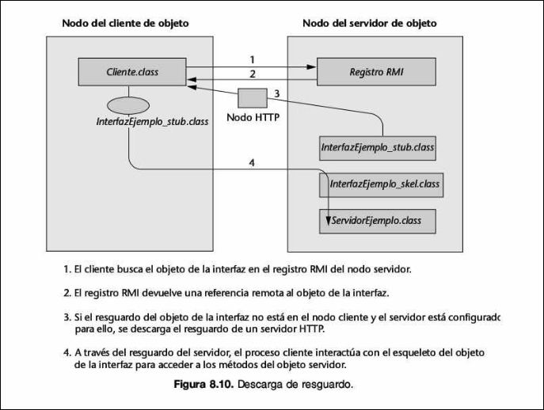
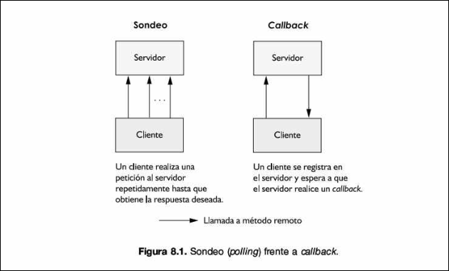
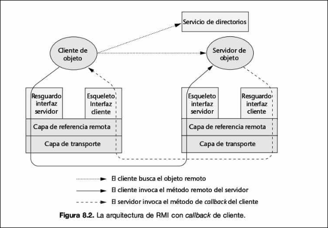

RMI Avanzado
Info
RMI avanzado, menudo puto fenómeno, era mejor que lo llamase RMI retrasado. La mayoría de cosas de este tema a día de hoy están obsoletas y no se usan. Java RMI tampoco se suele usar mucho.
Era Clásica (la puta mierda de la que hablan las diapositivas)
Esta es la metodología original (JDK 1.1 - 1.4) y la que se detalla explícitamente en el material de estudio.
-
¿Qué se usaba? Se utilizaban Archivos Físicos Generados. Era obligatorio pre-compilar clases auxiliares específicas para cada objeto remoto.
-
El Proceso Manual:
- Escribías tu implementación del servidor (ej.
SomeImpl.java). - Ejecutabas una herramienta de línea de comandos llamada
rmic(RMI Compiler) contra tu clase compilada. - Esta herramienta generaba dos nuevos archivos
.classen tu disco duro:SomeImpl_Stub.class(Para el cliente).SomeImpl_Skel.class(Para el servidor).
- Escribías tu implementación del servidor (ej.
-
¿Cómo funcionaba?
- En el Cliente: Necesitabas tener físicamente el archivo
_Stub.class(copiado a mano o descargado vía web). El cliente invocaba métodos sobre este objeto físico. - En el Servidor: Existía un objeto Skeleton real interpuesto. El flujo era rígido:
Red -> Objeto Skeleton -> Objeto Real. El Skeleton era el único que sabía cómo desempaquetar los datos para esa clase específica.
- En el Cliente: Necesitabas tener físicamente el archivo
La Era Moderna (esto no entra)
Con la evolución del lenguaje, Java eliminó la necesidad de generar código "sucio" intermedio, haciendo el proceso transparente.
-
¿Qué se usa ahora? Se usan Proxies Dinámicos y Reflexión. Los archivos físicos
_Stuby_Skelhan desaparecido del flujo de trabajo diario. -
El Proceso Automático:
- Escribes tu implementación.
- Lanzas el servidor. No ejecutas
rmic. - Java se encarga del resto en tiempo de ejecución.
-
¿Cómo funciona ahora?
- Adiós al Skeleton: El servidor RMI moderno es genérico. Ya no necesita una clase
_Skelintermedia. Usa la Reflexión de Java para inspeccionar el objeto real y llamar al método adecuado directamente al recibir la petición de red. - El Stub Fantasma: Cuando el cliente busca el objeto (
lookup), la Máquina Virtual detecta que es una interfaz remota y genera el código del Stub en la memoria RAM al instante (Proxy Dinámico). El cliente cree que usa una clase compilada, pero es un objeto sintético creado "al vuelo".
- Adiós al Skeleton: El servidor RMI moderno es genérico. Ya no necesita una clase
4.1 Distribución Dinámica de Código: Stub Downloading
En el modelo básico que vimos en el tema anterior, tenías que copiar manualmente el archivo Stub.class del servidor. Esto es un problema de mantenimiento: si cambias el servidor, tienes que redistribuir el stub a todos los clientes.
4.1.1 El Concepto
Imagina que quieres pedir comida a un restaurante (el Servidor). Para saber qué pedir, necesitas su carta o menú (el Stub/Interfaz).
-
Sin Stub Downloading (Forma manual): Tú tienes una copia impresa del menú en tu casa. Si el restaurante cambia sus platos o precios, tu menú de papel queda obsoleto. Llamarás pidiendo algo que ya no existe o con el precio equivocado. Para arreglarlo, tendrías que ir físicamente al restaurante, recoger el nuevo menú y volver a casa.
- En Informática: Esto equivale a tener que copiar manualmente el archivo
Stub.classen cada ordenador de cada cliente cada vez que actualizas el código del servidor. Si tienes 100 clientes, es inviable.
- En Informática: Esto equivale a tener que copiar manualmente el archivo
-
Con Stub Downloading (Forma dinámica): Tú no guardas el menú. Cuando quieres pedir, entras en la web del restaurante y ves el menú actual en ese preciso instante. Si el restaurante cambia el menú, tú ves el cambio automáticamente la próxima vez que entres.
- En Informática: El cliente no necesita tener el archivo
Stub.classinstalado en su disco duro. Cuando se conecta, el sistema le dice: "Oye, para hablar conmigo necesitas este código, descárgalo de aquí ahora mismo".
- En Informática: El cliente no necesita tener el archivo
4.1.2 Implementación Técnica
Para que esto funcione, el servidor RMI debe decirle al cliente "donde buscar" las clases que no tiene. Esto se hace mediante propiedades del sistema al lanzar el servidor:
- Codebase: Indica la URL donde están los stubs.
java -Djava.rmi.server.codebase=http://www.miservidor.com/clases/ - Hostname: la IP pública o nombre del servidor.
-Djava.rmi.server.hostname=mi.ip.publica - Policy: archivo de permisos de seguridad.
-Djava.security.policy=java.policy
Funcionamiento
- El Servidor se prepara: Cuando arrancas el servidor, le indicas una propiedad llamada
codebase. Le estás diciendo a RMI: "Si alguien te pide el Stub y no lo tiene, dile que lo descargue de esta dirección web" (por ejemplo, un servidor HTTP). - El Cliente busca: El cliente llama al Registro RMI buscando el objeto (
lookup). - Detección de falta: Si el cliente comprueba que no tiene la clase del Stub en su disco duro local....
- Descarga automática: ...automáticamente usa la URL que proporcionó el servidor (el
codebase) para descargar el archivo.classa través de HTTP, cargarlo en memoria y usarlo.

4.2 El Gestor de Seguridad (Security Manager)
Al permitir Stub Downloading, tu programa cliente está descargando y ejecutando código de una red externa. Esto es un riesgo de seguridad enorme.
4.2.1 RMISecurityManager
Es una clase que restringe lo que el código descargado puede hacer.
- Es obligatorio instanciarlo tanto en el cliente como en el servidor si vas a usar carga dinámica de clases.
- Se activa en el código con:
System.setSecurityManager(new RMISecurityManager());
4.2.2 El Fichero de Políticas (java.policy)
El Security Manager es un "portero" que no deja pasar a nadie a menos que esté en la lista de invitados. Esa lista el fichero java.policy.
Debes conceder permisos explícitos:
- Conectar al Registry: Permiso para hablar al puerto 1099
- Descargar Stubs: Permiso para conectar al puerto 80 (HTTP)
- Conexiones efímeras: Permiso para que puertos dinámicos ( '
1024-65535) usados en la comunicación de vuelta.
// archivo: cliente.policy
grant {
// 1. Permiso para hablar con el Registry (puerto 1099 normalmente)
// "connect": poder llamar. "resolve": poder buscar la IP.
permission java.net.SocketPermission "localhost:1099", "connect, resolve";
// 2. Permiso para conexiones efímeras (puertos dinámicos que usa RMI para responder)
// *:1024-65535 significa "cualquier IP" en el rango de puertos del 1024 al final.
// "accept": permite recibir llamadas de vuelta del servidor.
permission java.net.SocketPermission "*:1024-", "connect, accept, resolve";
// 3. Si descargas código de un servidor web (ej. puerto 80)
permission java.net.SocketPermission "miservidorweb.com:80", "connect";
};
Por buenas prácticas, se recomienda usar gestores de seguridad en todas las aplicaciones RMI, incluso si no usas descarga dinámica.
El fichero .policy no se aplica a "un objeto" (como el Stub), se aplica a toda la Máquina Virtual Java (JVM) que está ejecutando ese programa.
Cuando activas el RMISecurityManager, pones a toda la aplicación en un estado de "cuarentena" o "libertad condicional". Por defecto, Java asume que nadie (ni el código descargado, ni tu propio código del servidor) tiene permiso para hacer operaciones de red.
La colocación de archivos si usamos Stub downloading y securtity manager sería:
- Servidor: Necesita Interfaz.class, Impl.class, Server.class, Skeleton.class, Stub.class, java.policy.
- Servidor HTTP: Stub.class
- Cliente: Necesita Interfaz.class, Client.class, java.policy.
A. Policy del Cliente (Foco: Salir)
El cliente necesita permiso para ir al servidor.
grant {
// Permiso para CONECTAR (connect) con el servidor
permission java.net.SocketPermission "ip_del_servidor:1024-", "connect, resolve";
permission java.net.SocketPermission "ip_del_servidor:1099", "connect, resolve";
permission java.net.SocketPermission "ip_del_servidor_web:80", "connect, resolve";
};
B. Policy del Servidor (Foco: Entrar y Registrarse)
El servidor necesita permiso para recibir visitas y registrarse.
grant {
// Permiso para ACEPTAR (accept/listen) conexiones de cualquiera
permission java.net.SocketPermission "*:1024-", "accept, listen, connect, resolve";
// Permiso para hablar con el Registry (connect)
permission java.net.SocketPermission "localhost:1099", "connect, resolve";
};
4.3 Comunicación Bidireccional: RMI Callbacks
Hasta ahora, el modelo era Pull (Cliente pide
4.3.1 El Problema del Polling
Sin callbacks, el cliente tendría que preguntar constantemente: "¿Ya terminó? ¿Ya terminó?". Esto se llama Polling y es ineficiente y satura la red.

4.3.2 La Solución: Callback (Llamada inversa)
El cliente se "registra" en el servidor y espera a que el servidor le llame.
Esto convierte la arquitectura en Duplex: ambos lados actúan como cliente y servidor en momentos diferentes.
4.3.2 Estructura de un Callback
Para implementar esto, necesitamos dos interfaces remotas y dos juegos de Stubs/Skeletons.
Interfaz del Servidor: Define un método para que el cliente se suscriba.
- Ejemplo:
addCallback(HelloCallbackInterface cliente).
Interfaz del Cliente (CallbackInterface): Define el método que el servidor invocará.
- Ejemplo:
public void callMe(String msg).

La colocación de archivos con RMI Callback es:
- Servidor:
IntServer.class,ImplServer.class,Server.class,IntClient.class,StubClient.class,SkellServer.class. - Cliente:
IntClient.class,ImplCliente.class,Client.class,IntServer.class,StubServer.class,SkellClient.class.
4.3.4 Flujo de Ejecución
- Cliente: crea un objeto que implementa su interfaz de callback y lo exporta.
- Registro: el cliente llama al servidor (
addCallback) pasándole una referencia a sí mismo (this) - Servidor: guarda al cliente en una lista (ej: un
ArrayList) - Notificación: cuando ocurre el evento, el servidor recorre la lista e invoca el método
callMede cada cliente.
4.3.5 Ejemplo
Interfaz del Callback (Lo que tiene el Cliente) Define el método que el servidor llamará para notificar.
import java.rmi.Remote;
import java.rmi.RemoteException;
// Interfaz que implementará el Cliente
public interface InterfaceCallback extends Remote {
// El servidor usará este método para "gritarle" al cliente
public void notificar(String mensaje) throws RemoteException;
}
Interfaz del Servidor (El servicio principal) Define el método para registrarse.
import java.rmi.Remote;
import java.rmi.RemoteException;
public interface InterfaceServidor extends Remote {
// Método clásico del servicio
public String decirHola() throws RemoteException;
// MÉTODO CLAVE: El cliente pasa una referencia a sí mismo (su interfaz)
public void registrarCliente(InterfaceCallback cliente) throws RemoteException;
}
El Servidor (Implementación). El servidor debe mantener una lista de los clientes conectados para poder avisarles luego.
import java.rmi.server.UnicastRemoteObject;
import java.rmi.RemoteException;
import java.rmi.Naming;
import java.rmi.registry.LocateRegistry;
import java.util.Vector; // Usado en el PDF
public class ServidorImpl extends UnicastRemoteObject implements InterfaceServidor {
// Lista para guardar las referencias a los clientes
private Vector<InterfaceCallback> listaClientes;
public ServidorImpl() throws RemoteException {
super();
listaClientes = new Vector<>();
}
@Override
public String decirHola() throws RemoteException {
return "Hola desde el Servidor RMI";
}
@Override
public void registrarCliente(InterfaceCallback cliente) throws RemoteException {
// Guardamos al cliente en la lista
System.out.println("Servidor: Nuevo cliente registrado.");
listaClientes.add(cliente);
}
// Método interno para simular un evento y avisar a todos
public void realizarCallback() {
System.out.println("Servidor: Iniciando callbacks a " + listaClientes.size() + " clientes...");
// Recorremos la lista e invocamos al cliente [cite: 287]
for (InterfaceCallback cliente : listaClientes) {
try {
// AQUÍ OCURRE LA MAGIA: El servidor llama al cliente
cliente.notificar("¡El evento ha ocurrido! Saludos del servidor.");
} catch (RemoteException e) {
System.out.println("Error al contactar con un cliente: " + e.getMessage());
}
}
}
public static void main(String[] args) {
try {
LocateRegistry.createRegistry(1099);
ServidorImpl servidor = new ServidorImpl();
Naming.rebind("rmi://localhost/ServicioCallback", servidor);
System.out.println("Servidor listo.");
// Simulamos que pasados 5 segundos, ocurre el evento
Thread.sleep(5000);
servidor.realizarCallback();
} catch (Exception e) {
e.printStackTrace();
}
}
}
El Cliente (Implementación y Registro). Aquí está la parte crítica: el cliente debe implementar InterfaceCallback y exportarse para que el servidor pueda llamarle.
import java.rmi.server.UnicastRemoteObject;
import java.rmi.RemoteException;
import java.rmi.Naming;
// El cliente DEBE implementar la interfaz de callback [cite: 241]
public class ClienteConCallback extends UnicastRemoteObject implements InterfaceCallback {
public ClienteConCallback() throws RemoteException {
super(); // Esto exporta al cliente automáticamente como objeto remoto
}
// Este es el método que ejecutará el servidor remotamente
@Override
public void notificar(String mensaje) throws RemoteException {
System.out.println("CLIENTE RECIBIÓ NOTIFICACIÓN: " + mensaje);
}
public static void main(String[] args) {
try {
// 1. Instanciar el cliente (se exporta al nacer por heredar de UnicastRemoteObject)
ClienteConCallback miCliente = new ClienteConCallback();
// 2. Buscar al servidor
String url = "rmi://localhost/ServicioCallback";
InterfaceServidor servidor = (InterfaceServidor) Naming.lookup(url);
// 3. Registrarse pasando 'this' (nuestra propia referencia remota) [cite: 334]
System.out.println("Cliente: Registrándome para callbacks...");
servidor.registrarCliente(miCliente);
System.out.println("Cliente: Esperando evento...");
// Mantenemos el cliente vivo para recibir la llamada
// (En un caso real, la aplicación seguiría ejecutándose)
} catch (Exception e) {
e.printStackTrace();
}
}
}
4.4 Serialización y Paso de Objetos
A veces no basta con pasar números o texto (int, String). Necesitamos pasar estructuras de datos complejas u objetos propios.
4.4.1 Concepto de Serialización
Es el mecanismo para convertir un objeto (su código y sus datos) en una secuencia de bytes (stream) para enviarlo por la red y reconstruirlo idéntico en el otro lado.
- Java garantiza que el objeto reconstruido en el servidor funcionará igual que en el cliente.
4.4.2 Requisito Fundamental
Para pasar un objeto como argumento en RMI, la clase de ese objeto debe implementar la interfaz java.io.Serializable. Si no lo hace, RMI lanzará una excepción al intentar enviarlo.
Todos los atributos dentro del objeto también deben ser serializables (primitivos, Strings, o referencias a otros objetos Serializables).
Debe tener un constructor sin parámetros, necesario para que RMI pueda reconstruir el objeto destino mediante reflexión.
Si hay datos que no quieres enviar (ej: una contraseña o una conexión a BD abierta), debes marcarlos con la palabra clave transient.
import java.io.Serializable;
// 1. Implementa la interfaz (La etiqueta)
public class Empleado implements Serializable {
private String nombre;
// 3. Recursividad: La clase 'Direccion' TAMBIÉN debe ser Serializable
// Si 'Direccion' no lo fuera, daría error al enviar 'Empleado'.
private Direccion domicilio;
// 4. Transient: Este dato NO viaja. En el servidor llegará como null.
// Útil para seguridad o datos que solo tienen sentido localmente.
private transient String claveSecreta;
// 2. Constructor vacío: Necesario para reconstruir el objeto al llegar
public Empleado() {
}
// Constructor normal para usarlo tú
public Empleado(String nombre, Direccion d) {
this.nombre = nombre;
this.domicilio = d;
}
}